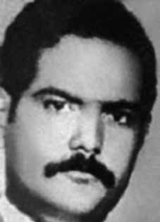

Dermeval
da Silva
Pereira
CIRCUNSTÂNCIAS DA MORTE
De acordo com o Relatório Arroyo, Dermeval foi um dos guerrilheiros presentes nos eventos de 14 de outubro de 1973, que resultaram na morte e consequente desaparecimento de André Grabois, Divino Ferreira de Souza, João Gualberto Calatrone e Antônio Alfredo Campos. Ainda de acordo com a mesma fonte, Dermeval sobreviveu à emboscada de outubro e seguiu vivo, pelo menos, até o dia 30 de dezembro de 1973. Nesta data, reuniu-se com Arroyo e, depois disso, partiu em direção à mata liderando um grupo de cinco guerrilheiros. Desde então, não foi mais visto por seus companheiros. O Relatório da Marinha entregue ao ministro da Justiça Mauricio Corrêa, em 1993, sustenta que Dermeval foi morto no dia 28 de março de 1974, data que aparece também no relatório do Centro de Informações do Exército (CIE), de 1975. Segundo o livro Dossiê ditadura, o morador da região José da Luz Filho afirmou à Caravana de Familiares de Desaparecidos da Guerrilha do Araguaia (1980) que Dermeval teria sido preso na casa de Nazaré Rodrigues de Souza. Ainda no mesmo livro constam outros depoimentos que contribuem para o esclarecimento das circunstâncias em que teria morrido Demerval, tornando-se vítima de desaparecimento forçado em seguida. Adalgisa Morais da Silva teria afirmado que Dermeval foi preso após pedir comida para a mulher de Luiz Garimpeiro. Outra testemunha, Rocilda Souza dos Santos, afirmou ao Ministério Público Federal que Dermeval foi transportado de helicóptero para a base militar da Bacaba, depois de ser entregue por Luiz Garimpeiro aos militares. O relatório da CEMDP informa que o nome de Dermeval consta dentre as pessoas que foram vistas detidas, segundo os depoimentos colhidos pelos procuradores Marlon Weichert, Guilherme Schelb, Ubiratan Cazetta e Felício Pontes Jr. no ano de 2001. Nessa ocasião, o ex-guia do Exército Manoel Leal de Lima, conhecido como Vanu, afirmou ter visto Dermeval na base da Bacaba, de onde ele estaria sendo levado para Marabá. No depoimento, Vanu disse ter ouvido do Sargento João Santa Cruz que Dermeval foi vítima de uma rajada de tiros de um militar após ter jogado um copo d’água na cara do mesmo.
According to the Arroyo Report, Dermeval was one of the guerrillas present in the events of October 14, 1973, which resulted in the death and consequent disappearance of André Grabois, Divino Ferreira de Souza, João Gualberto Calatrone and Antônio Alfredo Campos. Still according to the same source, Dermeval survived the October ambush and remained alive, at least, until December 30, 1973. On that date, he met with Arroyo and, after that, he left towards the forest leading a group of five guerrillas. Since then, he has not been seen by his companions. The Navy Report delivered to the Minister of Justice Mauricio Corrêa, in 1993, states that Dermeval was killed on March 28, 1974, a date that also appears in the Army Information Center (CIE) report from 1975. According to the book Dossier dictatorship, the resident of the region José da Luz Filho told the Caravana de Familiares de Desaparecidos da Guerrilha do Araguaia (1980) that Dermeval was reportedly arrested at Nazaré Rodrigues de Souza's house. The same book also contains other testimonies that contribute to clarifying the circumstances in which Demerval died, subsequently becoming a victim of forced disappearance. Adalgisa Morais da Silva would have stated that Dermeval was arrested after asking Luiz Garimpeiro's wife for food. Another witness, Rocilda Souza dos Santos, told the Federal Public Ministry that Dermeval was transported by helicopter to the Bacaba military base, after being handed over by Luiz Garimpeiro to the military. The CEMDP report states that Dermeval's name is among the people who were seen detained, according to the statements collected by prosecutors Marlon Weichert, Guilherme Schelb, Ubiratan Cazetta and Felício Pontes Jr. in 2001. On that occasion, former Army guide Manoel Leal de Lima, known as Vanu, stated that he had seen Dermeval at the Bacaba base, from where he was being taken to Marabá. In his statement, Vanu said he heard from Sergeant João Santa Cruz that Dermeval was the victim of a volley of shots from a soldier after throwing a glass of water in his face.
Según el Informe Arroyo, Dermeval fue uno de los guerrilleros presentes en los hechos del 14 de octubre de 1973, que resultaron en la muerte y consiguiente desaparición de André Grabois, Divino Ferreira de Souza, João Gualberto Calatrone y Antônio Alfredo Campos. Aún según la misma fuente, Dermeval sobrevivió a la emboscada de octubre y permaneció con vida, al menos, hasta el 30 de diciembre de 1973. En esa fecha se reunió con Arroyo y, luego, partió hacia el bosque al frente de un grupo de cinco guerrilleros. Desde entonces no ha sido visto por sus compañeros. El Informe de la Marina entregado al Ministro de Justicia Mauricio Corrêa, en 1993, afirma que Dermeval fue asesinado el 28 de marzo de 1974, fecha que también aparece en el informe del Centro de Información del Ejército (CIE) de 1975. Según el libro Dossier dictadura, el habitante de la región José da Luz Filho dijo a la Caravana de Familiares de Desaparecidos da Guerrilha do Araguaia (1980) que Dermeval estaba Según informes, fue detenido en la casa de Nazaré Rodrigues de Souza. El mismo libro también contiene otros testimonios que contribuyen a esclarecer las circunstancias en las que murió Demerval, convirtiéndose posteriormente en víctima de desaparición forzada. Adalgisa Morais da Silva habría afirmado que Dermeval fue detenido luego de pedirle comida a la esposa de Luiz Garimpeiro. Otra testigo, Rocilda Souza dos Santos, dijo al Ministerio Público Federal que Dermeval fue transportado en helicóptero a la base militar de Bacaba, luego de haber sido entregado por Luiz Garimpeiro a los militares. El informe del CEMDP señala que el nombre de Dermeval figura entre las personas que fueron vistas detenidas, según declaraciones recogidas por los fiscales Marlon Weichert, Guilherme Schelb, Ubiratan Cazetta y Felício Pontes Jr. en 2001. En esa ocasión, el ex guía del Ejército Manoel Leal de Lima, conocido como Vanu, afirmó haber visto a Dermeval en la base de Bacaba, desde donde lo llevaban a Marabá. En su declaración, Vanu dijo que escuchó del sargento João Santa Cruz que Dermeval fue víctima de una ráfaga de disparos de un soldado después de arrojarle un vaso de agua en la cara.